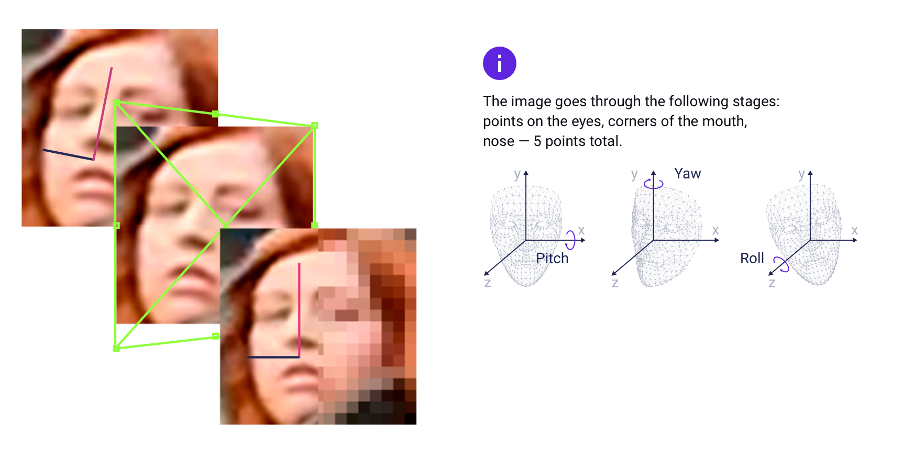

This paper will investigate how facial recognition technology works, and the issues that would be faced with its current
implementation in society. Although facial recognition technology is not yet accurate enough to be used for certain
situations. It should eventually reach a level at which it can be used effectively. However, currently many issues may
arise with its implementation as data privacy and security concerns increase, which could potentially lead to a more technologically
dystopian society.
Introduction
As technology advances, those that can be incorporated easily and work efficiently are sought after. One of these technologies is
facial recognition technology (FRT), which is a way of identifying individuals via real-time video/images of their faces.
Individual’s faces are scanned via a camera, which is then analysed by an algorithm that deciphers the subject’s facial dimensions.
The algorithm typically focuses on the size of and relationship between individual features (such as the shape of the eye socket, the
distance between eyes, the shape of the jaw and so on) (Fussey, P., et al. - 2020). The data analysed by the algorithm is then matched
to a database containing other data about facial structures to find a possible match.
Although facial recognition technology is said to have gained a massive increase in accuracy between the period of 2013-2018, its
accuracy and use in mass public places can still be questionable (Lai, X., et al. - 2021).
Facial recognition implementation
There are many ways that facial recognition can be implemented in society and many ways that it is currently implemented, especially
in recent times (2018 and onwards). Facial recognition can currently be seen in use on certain smartphones as a security measure, such as
the new iPhones released after the iPhone 8 which was released in late 2017. It is also seen used within public places in countries such
as Russia, China, India and South Korea. These countries implemented facial recognition technology during the COVID-19 pandemic to enforce
quarantine, trace potential contacts with COVID-19 carriers and monitor fevers (Roussi, A., et al. - 2020). In January 2020, a city-wide
surveillance system using live facial recognition software developed by NtechLab was successfully implemented and used across the whole of
Moscow (Roussi, A., et al. - 2020). China is also known for its extensive use of facial recognition technology in public places for security
and the tracking of “criminals” by the government, but recently due to COVID-19, facial recognition technology such as thermal facial recognition
and masked facial recognition has seen use in small businesses such as local stores and restaurants (Su, Z., et al. - 2022). Facial recognition
could be utilised further and instead of just being used for smartphone security, it could also be used for banking security and identification
for healthcare. It could also be implemented in public and used for policing and enforcing security measures, as seen in China. However, for
this to be implemented, the issue of accuracy needs to be overcome, especially if they are to be implemented in the UK.
Issue with facial recognition and how it works
One main issue with facial recognition technology is accuracy. The accuracy can depend on how the facial recognition technology works. Such as If the
algorithm uses an image/video, many issues may occur, such as inadequate lighting, bad colouring and positioning of a person's face. In 2018 a study done by
Joy Buolamwini and Timnit Gebru showed that certain advanced facial recognition software failed to identify people of colour 35% of the time, compared to a 1%
fail rate for Caucasian people. Researchers at the University of Essex in Colchester also carried out an experiment, where facial recognition made only 8 correct
matches out of 42 attempts (Crawford, K., et al. - 2019). These errors could occur in picture/video facial recognition software due to inadequate lighting, where
features of a face are difficult to pick out.
“FindFace” developed by Ntechlab, is an example of a video/picture facial recognition software. The algorithm detects people’s faces and the positioning
of their heads to correct for distortions using 3D vectors. It then looks for certain facial features and their placement to then map them out onto the vector.
Afterwards, it compares the values and facial features to those contained on its database to find a % match probability (the greater the % the greater the chance that
the face is a match) (NTECH LAB, 2016). If lighting, shading and facial positions are poor, there will likely be insufficient data and facial feature collection to make
a high % facial match.

Image 1: How FindFace works (NTECH LAB, 2016)
A more accurate method of facial recognition software can be seen used in Apple iPhones, where depth data and an infrared image are used.
Rather than taking data from a normal image/video, the phone projects thousands of invisible dots onto your face to create a depth map and captures an infrared
image (About face ID advanced technology – apple support). This eliminates the issue of lighting as the image being capturing is infrared, and this is why you can
unlock your iPhone using face ID when it is pitch black. However, as this method is scanning the persons face directly, rather than utilising an image, it cannot
be used for CCTVs in crowded areas, and rather has to be used up close. This could be used to identify people for banking and healthcare issues if the person is
unresponsive, but then there arises the issue of security and privacy. However, if everything starts using the same facial recognition software there could be
issues with data leaks. Although it may be more secure to use face identification, data leaks could have your face/face structure leaked, which is concerning for
privacy and security matters, as people could use this information to access anything that is protected via face identification. Another issue would be privacy
issues, if private companies start implementing facial recognition software, the storage of that data and the potential selling of that data can be a huge risk
and privacy breach. Breaches of data privacy can be seen in China, where facial recognition software is currently present and used by private companies, as the
public and the government are unsure as to where people's images and data are stored (Su, Z. et al. 2022). If facial recognition were to be implemented in the UK
and other societies, laws such as the Data Protection Act (DPA) (for the UK) or the General Data Protection Regulation (GDPR) (for the EU) need to be updated and
regulated, which will also cause mass political debate and divide.
Conclusion
Although facial recognition technology may have useful implementations, the technology is not accurate or advanced enough yet to be implemented, and even if it
were to be implemented, there would be a mass political divide due to law changes and the idea that we are beginning to become too reliant on technology, which
may have its own consequences, including further need for cyber security and increasing concerns on data leaks and privacy.
References
Fussey, P., Davies, B. and Innes, M. (2020) ‘“assisted” facial recognition and the reinvention of suspicion and discretion in digitalpolicing’,The British Journal of Criminology
Available at: https://academic.oup.com/bjc/article/61/2/325/5921789?login=true (Accessed: 15 November 2023).
Roussi, A. (2020) ‘Resisting the rise of facial recognition’, Nature, 587(7834)
Available at: https://www.proquest.com/docview/2626301335/fulltext/9F8E56F104C04BAAPQ/1?accountid=17256 (Accessed: 15 November 2023).
Lai, X. and Patrick Rau, P.-L. (2021) ‘Has Facial Recognition Technology been misused? A public perception model of facial recognition scenarios’, Computers in Human Behavior
Available at: https://www-sciencedirect-com.surrey.idm.oclc.org/science/article/pii/S074756322100217X (Accessed: 18 November 2023).
Crawford, K. (2019) ‘Regulate facial-recognition technology’, Nature, 572(7771), pp. 565–565.
Available at: https://www.proquest.com/docview/2283105130?pq-origsite=primo (Accessed: 18 November 2023).
Su, Z. et al. (2022) ‘Facial recognition law in China’, Journal of Medical Ethics
Available at: https://www.proquest.com/docview/2647393544/fulltext/9C0541634F6D42E0PQ/1?accountid=17256 (Accessed: 20 November 2023)
APPLE, (2023) About face ID advanced technology
Available at: https://support.apple.com/en-gb/102381#:~:text=Each%20time%20you%20unlock%20your,stored%20mathematical%20representation%20to%20authenticate. (Accessed: 20 November 2023).
NTECH LAB, (2016), meet the algorithm
Available at: www.ntechlab.com/technology/ (access on; 20 November 2023 )